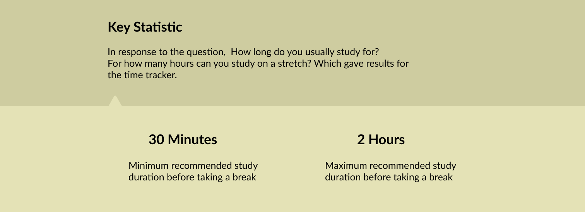
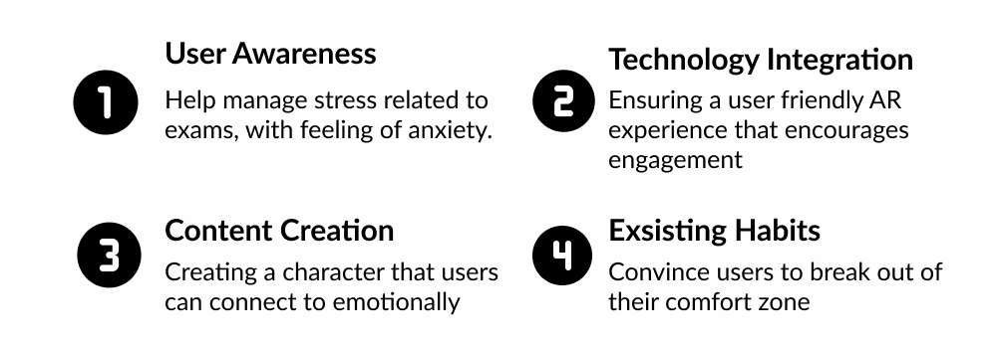
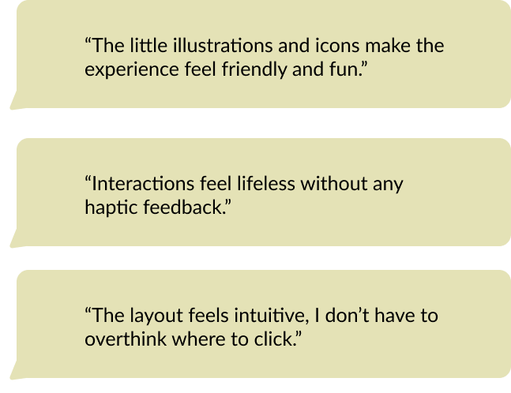

UX Case Study · Concept
Buddy
A study companion that helps anxious students take real breaks — with a character that grows when they do.

01 — Overview
Studying harder isn’t the problem. Never stopping is.
Buddy is a concept app that helps students study in healthy stretches and actually rest between them. Instead of nagging, it uses a friendly character and light AR to make breaks feel like progress — so stepping away stops feeling like falling behind.
02 — Persona
Meet Kerstin, the anxious perfectionist.
Kerstin is the student Buddy is built for: driven, hard on herself, and quick to skip breaks when exams loom. She wants to do well, but pushing without pause leaves her stressed and burnt out.

I don’t pre-plan, so it piles up — and I always forget to take a break.
03 — Key insight
Breaks have a sweet spot.
I asked students how long they study in one stretch. The answers pointed at a clear window: somewhere between 30 minutes and 2 hours before a break keeps focus up without burning out. That range became the backbone of Buddy’s time tracker — it nudges a pause before fatigue sets in, not after.

04 — Challenges
Four problems worth designing around.
The brief had real tension in it: help students manage exam-related anxiety, make an AR experience that’s genuinely friendly to use, create a character people connect with emotionally, and — hardest of all — convince users to break the habit of pushing through without rest.

05 — The design
Make resting feel like growing.
The redesign turned a flat “start session” screen into a warm loop: study, then pick a break that suits you — a walk, a stretch, dancing, yoga — and watch a plant grow as the habit builds. The character turns an abstract good habit into something you can see and care about.
06 — Testing
What students actually felt.
Usability testing told a clear story. The illustrations made the app feel friendly and fun, and the layout felt intuitive enough that people didn’t overthink where to tap. The sharpest note was about feel, not flow:
Interactions feel lifeless without any haptic feedback.

07 — Reflection
Breaks as growth, not guilt.
Buddy’s real idea is small but stubborn: reframe rest as progress. For a perfectionist like Kerstin, a character that grows when she pauses is more persuasive than any reminder.
Next, I’d add the haptic feedback testers asked for, widen the library of break activities, and test the AR character with more students to see whether it keeps them coming back.